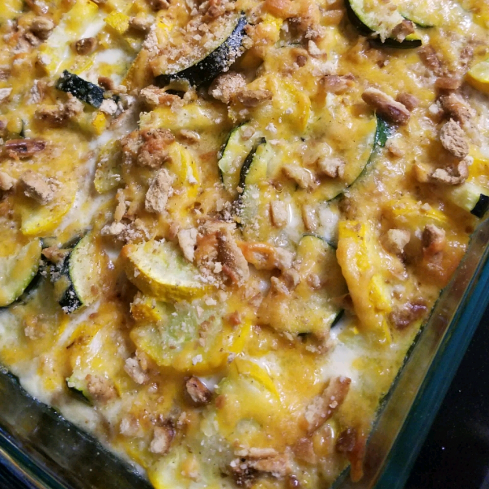

Yellow Squash Cassserole

Description
Tender squash, gooey cheese and crunchy crackers make this a memorable side dish or a hearty main course. This is a great dish that can be made with low-fat ingredients and is still just as good!
Ingredients
- 4 cups sliced yellow squash
- 1/2 cup chopped onion
- 35 buttery round crackers, crushed
- 1 cup shredded Cheddar cheese
- 2 eggs, beaten
- 3/4 cup milk
- 1/4 cup butter, melted
- 1 teaspoon salt
- ground black pepper, to taste
- 2 tablespoons butter
Steps
- Preheat oven to 400 degrees F (200 degrees C).
- Place squash and onion in a large skillet over medium heat. Pour in a small amount of water. Cover, and cook until squash is tender, about 5 minutes. Drain well, and place in a large bowl.
- In a medium bowl, mix together cracker crumbs and cheese. Stir half of the cracker mixture into the cooked squash and onions. In a small bowl, mix together eggs and milk, then add to squash mixture. Stir in 1/4 cup melted butter, and season with salt and pepper. Spread into a 9x13 inch baking dish. Sprinkle with remaining cracker mixture, and dot with 2 tablespoons butter.
Keept it up -- you're almost there!
- Bake in preheated oven for 25 minutes, or until lightly browned.
And Viola! Almost time to eat, but be sure to check out our other recipes first to complete your Thanksgiving meal!